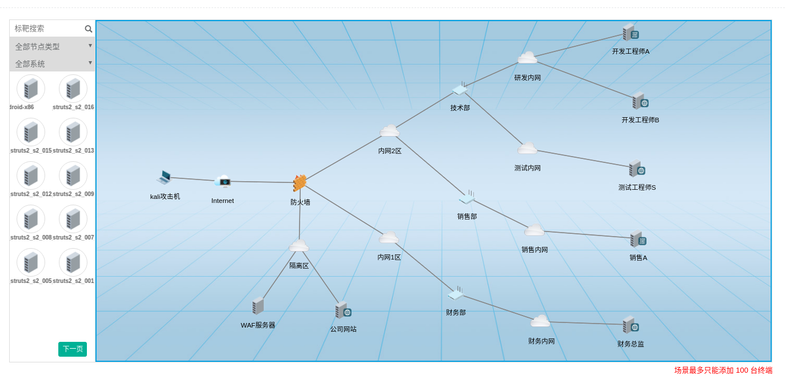
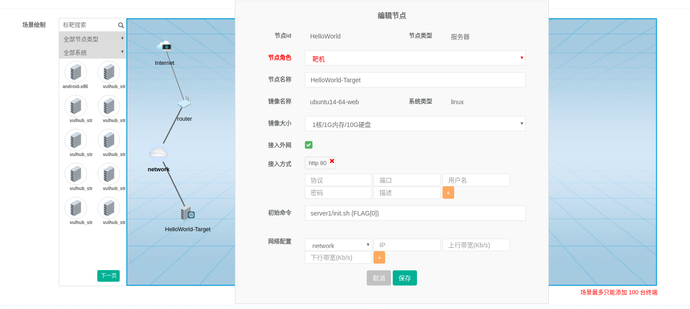

仿真场景是用来描述虚拟网络中拓扑和节点属性的结构化数据，由场景拓扑和资源文件组成。场景能够在系统中持久化存储、快速恢复。
场景结构
场景由场景拓扑和资源文件组成，资源文件按照规定的格式打包成zip文件即可。该zip内文件结构如下：
xxx.zip ---|--- server1/ ---|---install.sh
---|---init.sh
---|---www/
---|---db.sql
|--- server2/ ---| 文件夹不是必须的，文件或文件夹名称也无需固定，此处仅为目录清晰.txt
资源文件
- 运行场景需要的资源文件,如Web代码、二进制文件等
- 可选的安装脚本文件
- 可选的初始化脚本文件
变量
资源文件脚本可传递变量
变量调用形式
{我是变量名}
全局变量
-
PLATFORM_IP、PLATFORM_PORT
OJ平台地址ip和prot，作用范围： 初始化脚本
-
FLAG[*]
平台发放给场景的动态flag FLAG[0] 为第一个flag, 作用范围： 初始化脚本
局部变量
-
网络元件id
-
服务器ip
虚拟机在网络上分配的ip,预先分配的，调用初始化脚本时已获得 例vm-op.network-in.ip,作用范围： 初始化脚本
自定义场景
- 页面DIY

新建场景时选择场景类型为仿真 添加节点：选择左侧节点，拖入右侧，编辑属性。 添加网络连接：右键节点，选择添加连线。
访问模式
系统支持私有环境/共享环境两种访问模式
- 共享环境即每个场景只有一个实例，第二个用户申请的场景会返回第一个用户已经申请好的场景，所有人共享一个环境。
- 私有环境每个用户申请的环境都是私有的，互不干扰。
具体课程/练习/竞赛中私有环境或共享环境的请根据实际情况进行选择。
管理员模式
管理员在后台测试申请时，除场景配置的登录方式以外，额外提供管理员所有标靶默认的接入方式
字段详解
节点角色
- 操作机/operator： 提供用户操作的机器，通常提供rdp/ssh远程接入方式，操作机会分配外网地址(floating_ip)。
- 靶机/target： 提供用户进行攻击的标靶，通常运行一些Web或二进制服务,靶机默认不提供外网地址(floating_ip)，除非场景中缺少操作机。
- 僚机/wingman： 场景中需要配合靶机构成完整场景的标靶，这些标靶一般不提供直接访问方式，而是需要用户攻破靶机，利用跳板渗透进入，僚机不分配外网地址(floating_ip)。
接入方式
场景中该标靶的访问模式，采用协议 + 端口的描述方式，特殊的rdp协议具有mode参数nla|rdp
额外的针对远程访问方式 SSH、RDP 协议，系统会给出Web访问的链接 支持Cloud-init的标靶支持用户自定义新增，不支持Cloud-init的标靶需标靶支持该用户
镜像大小flavor支持列表
- m1.1c-0.5g-8g / 1核/512M内存/8G硬盘
- m1.1c-1g-8g / 1核/1G内存/8G硬盘
- m2.1c-0.5g-10g / 1核/512M内存/10G硬盘
- m2.1c-1g-10g / 1核/1G内存/10G硬盘
- m2.2c-2g-10g / 2核/2G内存/10G硬盘
- m2.2c-4g-10g / 2核/3G内存/10G硬盘
- m3.1c-1g-20g / 1核/1G内存/20G硬盘
- m3.1c-2g-20g / 1核/2G内存/20G硬盘
- m3.2c-4g-20g / 2核/4G内存/20G硬盘
- m3.4c-4g-20g / 4核/4G内存/20G硬盘
- m4.1c-1g-40g / 1核/1G内存/40G硬盘
- m4.2c-2g-40g / 2核/2G内存/40G硬盘
- m4.4c-4g-40g / 4核/4G内存/40G硬盘
- m4.4c-8g-40g / 4核/8G内存/40G硬盘
- m5.4c-4g-80g / 4核/4G内存/80G硬盘
- m5.4c-8g-80g / 4核/8G内存/80G硬盘
注意项
- 目前仅支持一个网卡，多网卡无法智能判断添加默认路由。
实例
HelloWorld
本实例目的，实现一个单个终端节点的Web访问场景，场景提供HTTP访问模式，用户打开场景即可直接看到答案。
本实例顺带利用Cloud-init模块实现随机答案，可供参考。
文件结构
xxx.zip ---|--- server1/ ---|---install.sh install文件，执行目录为当前目录
---|---init.sh init文件，执行目录为当前目录
---|---bin/index.html 场景文件
页面编辑拓扑
- 添加Internet网络，network网络
- 添加router路由器，并连接网络
- 找到ubuntu14-64-web镜像，拖入场景,
- 右键标靶，编辑节点，设置节点属性如下： 
- 右键标靶，添加连线，添加靶机network网络的连线